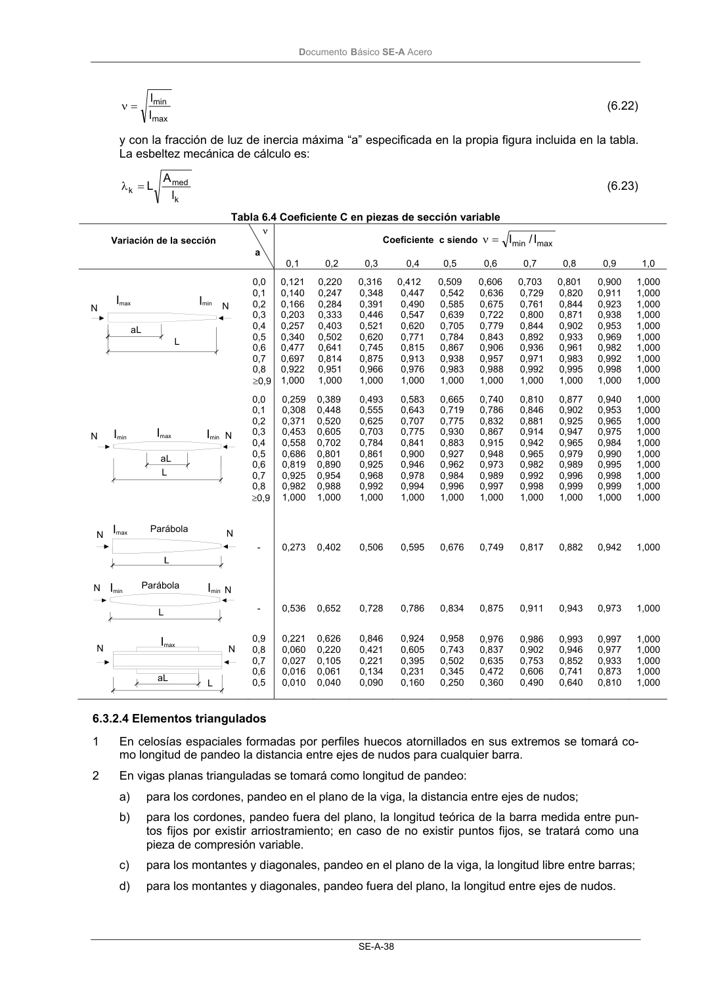
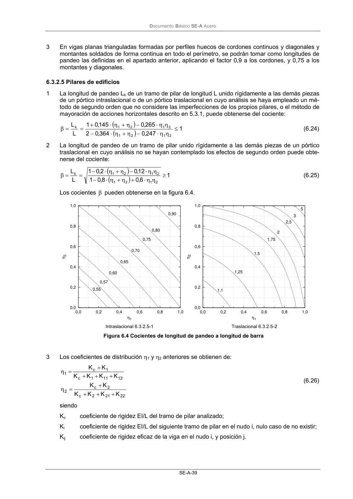

DB-SE-A · 6.3.2.4 Elementos triangulados · versión 2007-10-23 · capa oficial
Formatos: JSON compacto · Markdown · PDF fuente
Ámbito del documento · texto del ámbito · documento y tablas
ID técnico a0076 · PDF pág. 40-41 · jerarquía no validada por persona · contrastado con el literal de la página 40 (candidato tipográfico); no validado por persona · padre: a0073
6.3.2.4 Elementos triangulados 1 En celosías espaciales formadas por perfiles huecos atornillados en sus extremos se tomará co- mo longitud de pandeo la distancia entre ejes de nudos para cualquier barra. 2 En vigas planas trianguladas se tomará como longitud de pandeo: a) para los cordones, pandeo en el plano de la viga, la distancia entre ejes de nudos; b) para los cordones, pandeo fuera del plano, la longitud teórica de la barra medida entre pun- tos fijos por existir arriostramiento; en caso de no existir puntos fijos, se tratará como una pieza de compresión variable. c) para los montantes y diagonales, pandeo en el plano de la viga, la longitud libre entre barras; d) para los montantes y diagonales, pandeo fuera del plano, la longitud entre ejes de nudos. N N L aL Imax Imin Imax Imin IminN N aL L N N Imax Parábola N N Imin Parábola Imin L Imax aL L N N DocumentoBásico SE-A Acero SE-A-39 3 En vigas planas trianguladas formadas por perfiles huecos de cordones continuos y diagonales y montantes soldados de forma continua en todo el perímetro, se podrán tomar como longitudes de pandeo las definidas en el apartado anterior, aplicando el factor 0,9 a los cordones, y 0,75 a los montantes y diagonales.


PDF fuente redistribuible: copia fiel enlazada en esta página (SHA256 verificado).